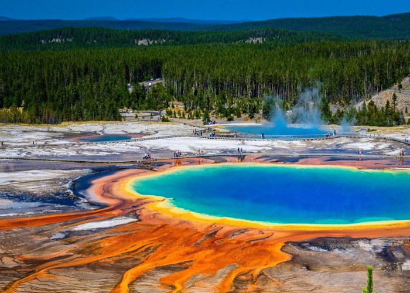
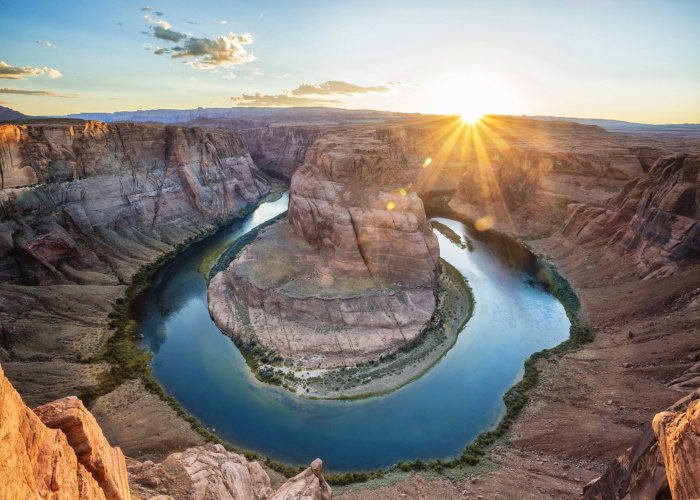
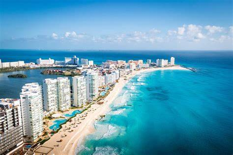

1.Park Yellowstone, USA
Każdy zna ten park. Jest pełen gejzerów, gorących źródeł i kanionów. Położony jest na terenie trzech stanów: Wyoming, Montana oraz Idaho. Znaczna większość parku leży na wysokości ponad 3 tys. metrów nad poziomem morza. Park Yellowstone to najstarszy park na świecie. Na jego terenie znajduje się wulkan o tej samej nazwie, który jest czynny do dziś. Park ten często wykorzystywany jest do realizacji filmów katastroficznych, szczególnie tych związanych z końcem świata :)

2. Wielki Kanion, USA
Obowiązkowym punktem na mapie podczas wycieczki do Ameryki Północnej jest Wielki Kanion Kolorado, który znajduje się w stanie Arizona. Kanion przez tysiące lat był rzeźbiony przez płynącą nim rzekę Colorado i obecnie stanowi najbardziej znaną atrakcję przyrodniczą na całym świecie. Drugiego takiego miejsca na próżno szukać, dlatego też każda osoba wybierając się do Ameryki, obowiązkowo zalicza ten punkt w swoim planie wycieczki. Miejsce to jest prawdziwą gratką dla poszukiwaczy przygód, a turyści, którzy chcieliby aktywnie spędzić czas w tym miejscu, powinni wybrać się na spływ specjalnymi tratwami lub pontonami po rzece Colorado. Dosyć ciekawa powinna być również wycieczka w głąb kanionu, ponieważ w ten sposób można z bliska przyjrzeć się całemu pięknu tego niezwykłego miejsca.

3. Cancun, Meksyk
Jeszcze 50 lat temu w liczba mieszkańców Cancun była bardzo skromna, a dziś mieszka tu blisko 600 tysięcy ludzi. Wszystko dzięki temu, że Morze Karaibskie i cudowna plaża jest w tym miejscu bardziej urokliwa niż gdzie indziej. Kilometry cudownego piasku, przezroczysta i szmaragdowa woda co roku przyciągają tu niemal siedem milionów turystów z całego świata. W ciągu półwiecza Cancun stało się kurortem, o którym usłyszała większość ludzi na świecie. Nie tylko plaże Cancun stanowią atrakcję tego miasta. To tu, w głębinach Morza Karaibskiego, leży największe, podwodne muzeum. Umieszczono w nim cudowne prace brytyjskiego rzeźbiarza Jasona de Caires Taylora. Wystawę ogląda się z łodzi wyposażonych w szklane dna albo nurkując w tym miejscu.
